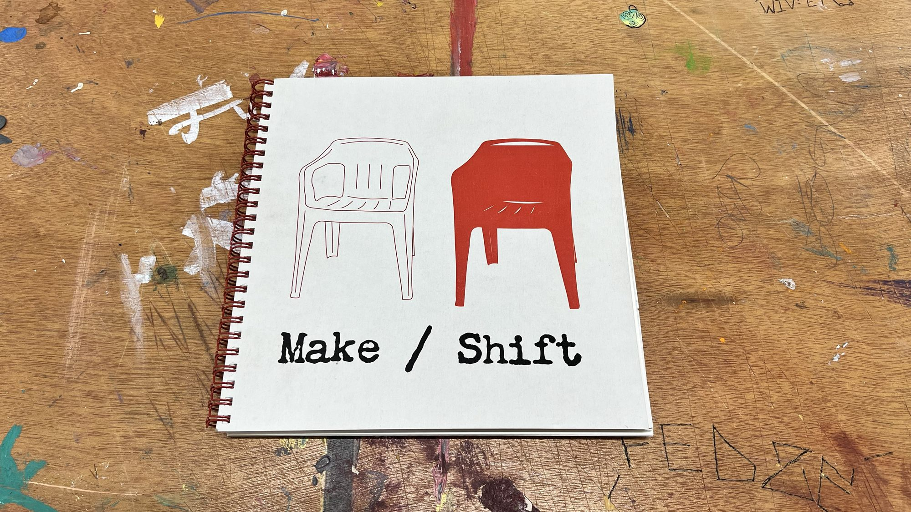
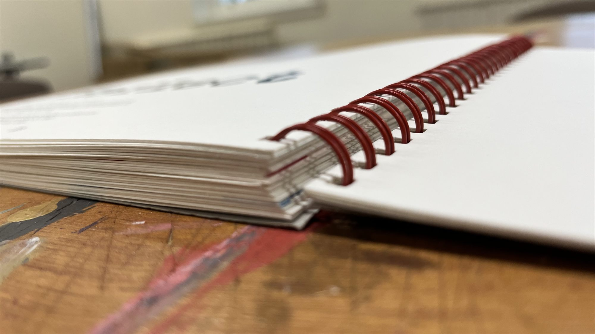
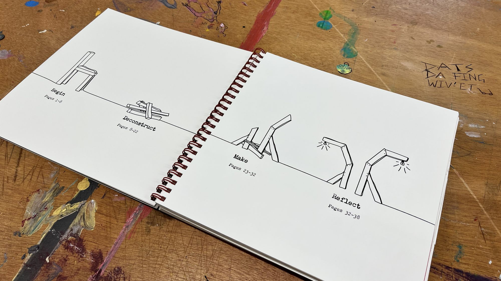
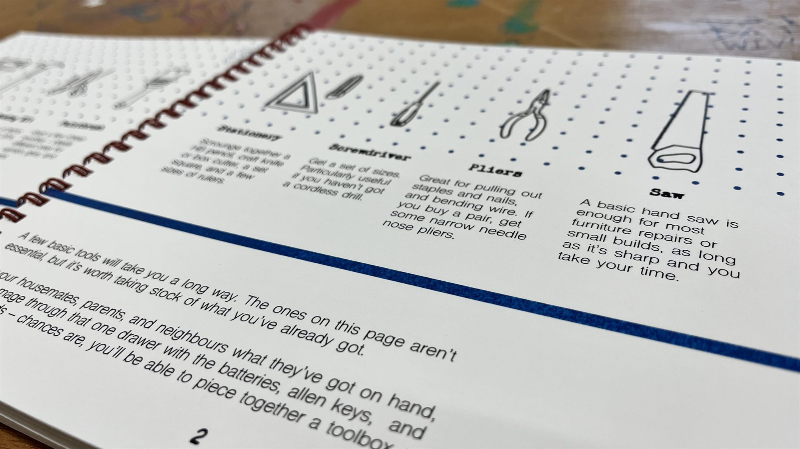
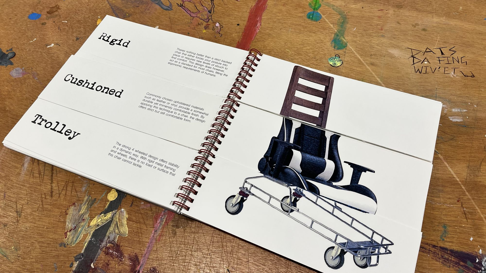
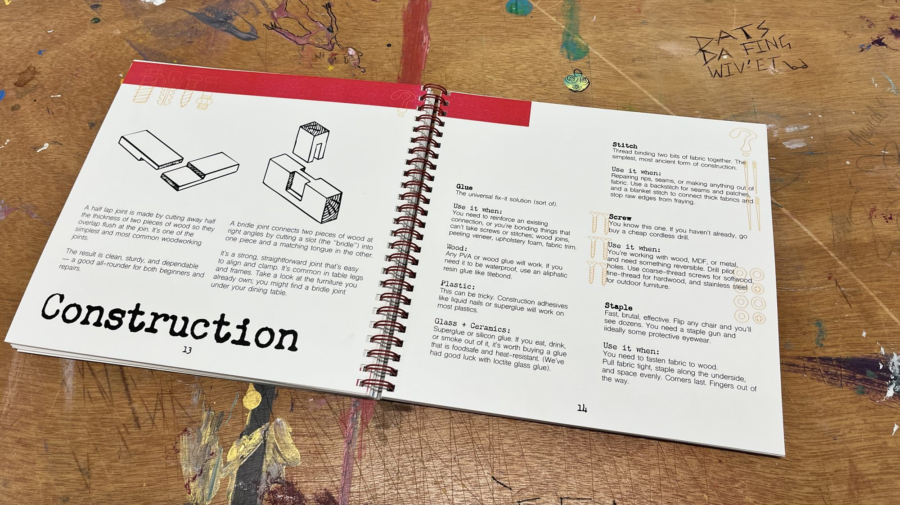
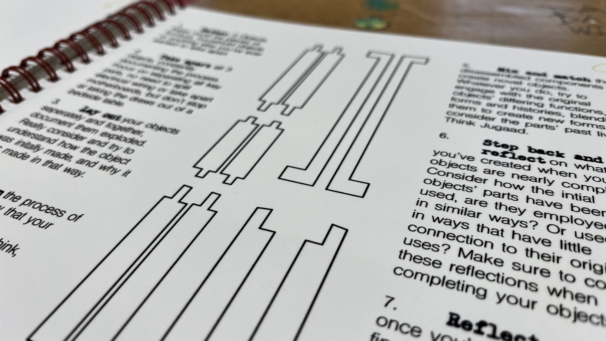
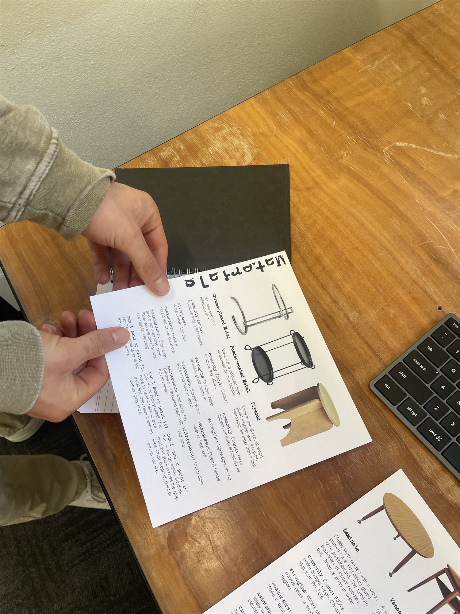

DESIGN / 03
Make / Shift
- WORK
- Interactive guide to sustainable making
- YEAR
- 2025
- MEDIUM
- Editorial and publication design · Writing · Illustration · Physical prototyping, printing and binding
- CONTEXT
- ANU DESN2008 · Semester 2 · University group project

Overview
Make / Shift is a collaboratively designed and professionally finished spiral-bound book encouraging young people to rethink how they buy, repair, reuse and make furniture. It responds to the environmental cost of low-quality household goods and the habit of treating everyday objects as disposable.
The book was developed for young people furnishing a first home, especially those with limited budgets, resources or practical experience. Rather than simply prescribing what to buy, it encourages readers to develop the confidence to work with what they already have.
Design Brief
Create an engaging design intervention that could increase design literacy and encourage more sustainable approaches to household objects. The project asked how making, repairing and critical reflection could help people understand material value and reduce waste.
Our group initially explored workshop and awareness-campaign formats before narrowing the project to a book that could guide readers independently.



Process
We researched repair, planned obsolescence, citizen design and the relationship between consumers and everyday objects. Interviews and user mapping helped us focus on young adults moving out and starting to buy household furniture.
The publication grew through individual spread experiments and collaborative refinement, with repeated tests of tone, page layout, illustrations, paper, colour, printing and binding. I was involved across the entire project, including research, developing and contributing content, designing pages and illustrations, testing print choices, and producing the final physical book.
We also tested making exercises with other students. An activity using parts from a dismantled toaster showed how open-ended instructions could make it difficult for participants to understand what counted as a functional result. That feedback informed clearer directions and constraints in the publication.
The final book follows four stages—Begin, Deconstruct, Make and Reflect—progressing from basic tools, materials and design thinking toward reuse, co-design, practical making and reflection.




Outcome
Our group completed a fully refined, professionally produced spiral-bound publication, rather than only a digital mockup or rough prototype. It combines practical instruction, approachable graphics, case studies and exercises intended to help readers become more confident makers.
The outcome shows how a publication can serve as both an educational object and an invitation to act. The project also strengthened my experience in collaborative editorial design and taking a document all the way through material tests to a finished, physical artefact.